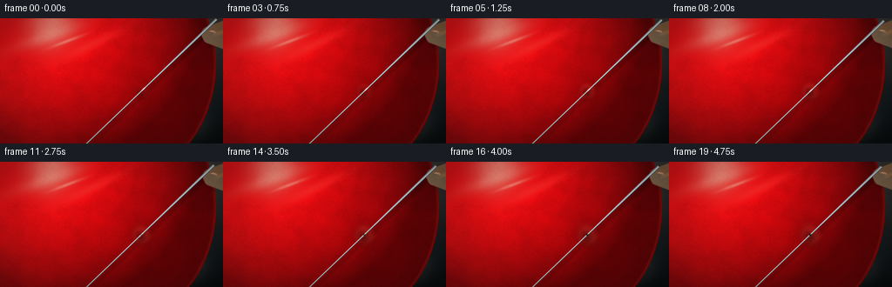
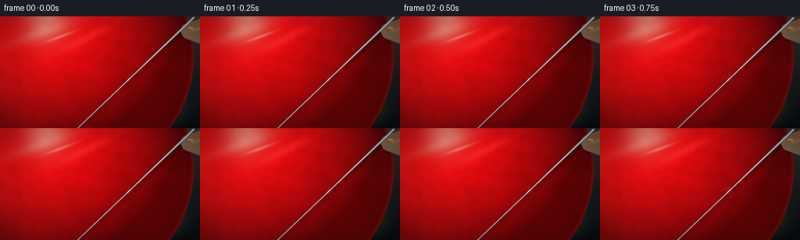
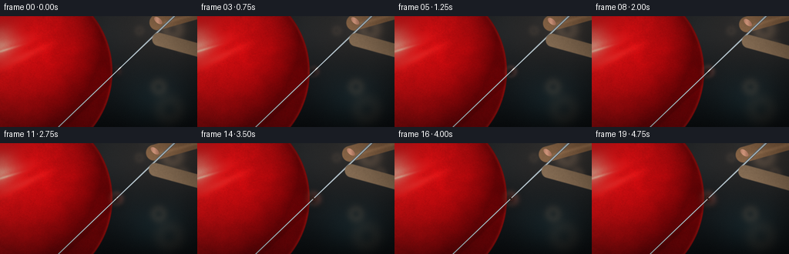
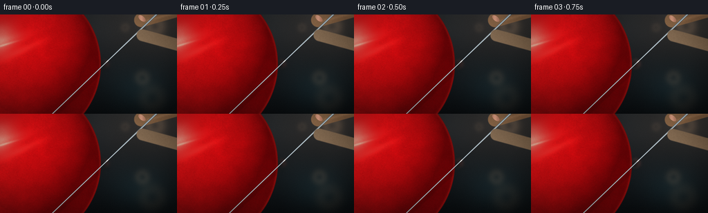
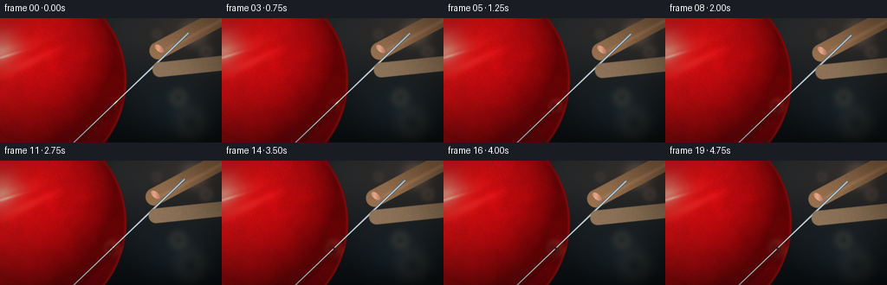
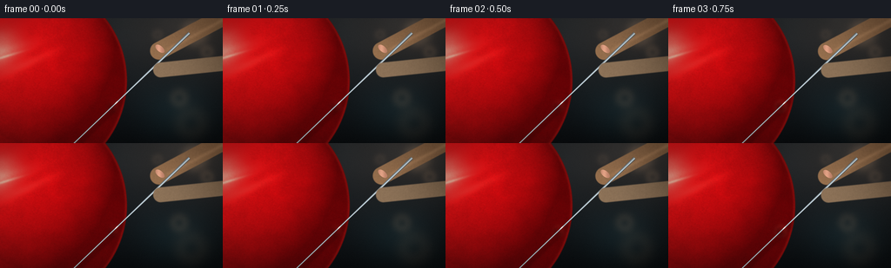
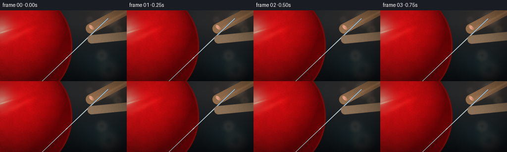

CODING AGENTS AS PIXEL WORLD MODELS
traex/DeepSeek-V4.1-Flash · phygen_021
点击播放 · 原生 RGB 像素
逐轮保存的候选
回放视频、检查图与代码变化。
每份候选均可单独播放。实际图片检查记录在下方工具轨迹中。
候选 01播放与检查图
点击播放 · 原生 RGB 像素


展开代码变化
--- 上一保存版本
+++ 本次保存版本
@@ -0,0 +1,392 @@
+"""Procedural macro video: a hand slowly presses a needle into a balloon.
+
+The renderer is intentionally self-contained: numpy/PIL/scipy geometry,
+shading, blur, and compositing only.
+"""
+
+from pathlib import Path
+
+import numpy as np
+from PIL import Image
+from scipy.ndimage import gaussian_filter
+
+import artifact_io
+
+
+W, H = 256, 144
+S = 4
+WS, HS = W * S, H * S
+FPS = 4
+FRAMES = 20
+ROOT = Path(__file__).resolve().parent
+
+
+def clamp01(x):
+ return np.clip(x, 0.0, 1.0)
+
+
+def smoothstep(a, b, x):
+ t = clamp01((x - a) / (b - a))
+ return t * t * (3.0 - 2.0 * t)
+
+
+def normalize(v):
+ v = np.asarray(v, dtype=np.float64)
+ return v / np.linalg.norm(v)
+
+
+def mix(a, b, t):
+ t = np.asarray(t)[..., None] if np.asarray(t).ndim == 2 else t
+ return np.asarray(a) * (1.0 - t) + np.asarray(b) * t
+
+
+def over(dst, src, alpha):
+ if np.asarray(alpha).ndim == 2:
+ alpha = np.asarray(alpha)[..., None]
+ return dst * (1.0 - alpha) + src * alpha
+
+
+def capsule_sdf(x, y, a, b, radius):
+ ax, ay = a
+ bx, by = b
+ dx, dy = bx - ax, by - ay
+ denom = dx * dx + dy * dy
+ t = clamp01(((x - ax) * dx + (y - ay) * dy) / denom)
+ px = ax + t * dx
+ py = ay + t * dy
+ return np.hypot(x - px, y - py) - radius
+
+
+def rotated_ellipse(x, y, cx, cy, rx, ry, angle):
+ ca, sa = np.cos(angle), np.sin(angle)
+ u = (x - cx) * ca + (y - cy) * sa
+ v = -(x - cx) * sa + (y - cy) * ca
+ return (u / rx) ** 2 + (v / ry) ** 2
+
+
+def make_coords():
+ x = (np.arange(WS, dtype=np.float32) + 0.5) / S
+ y = (np.arange(HS, dtype=np.float32) + 0.5) / S
+ return np.meshgrid(x, y)
+
+
+X, Y = make_coords()
+
+
+def build_background(rng):
+ t = clamp01(Y / H)
+ top = np.array([0.125, 0.155, 0.185], dtype=np.float32)
+ bottom = np.array([0.028, 0.040, 0.055], dtype=np.float32)
+ col = mix(top, bottom, t)
+
+ warm = np.exp(-(((X - 225.0) / 90.0) ** 2 + ((Y - 7.0) / 55.0) ** 2))
+ col += warm[..., None] * np.array([0.085, 0.055, 0.033], dtype=np.float32)
+ cool = np.exp(-(((X - 205.0) / 46.0) ** 2 + ((Y - 108.0) / 35.0) ** 2))
+ col += cool[..., None] * np.array([0.018, 0.055, 0.065], dtype=np.float32)
+
+ # Defocused studio lights, kept low-contrast behind the balloon.
+ bokeh = np.zeros((HS, WS), dtype=np.float32)
+ lights = [
+ (224.0, 17.0, 10.0, 0.16),
+ (238.0, 39.0, 5.0, 0.10),
+ (206.0, 92.0, 7.0, 0.08),
+ (220.0, 121.0, 13.0, 0.055),
+ (181.0, 19.0, 4.0, 0.06),
+ ]
+ for cx, cy, radius, strength in lights:
+ rr = np.hypot(X - cx, Y - cy)
+ bokeh += strength * np.exp(-((rr - radius) / (radius * 0.65 + 1.0)) ** 2)
+ bokeh += 0.35 * strength * np.exp(-(rr / (radius + 1.0)) ** 4)
+ bokeh = gaussian_filter(bokeh, 1.1 * S)
+ col += bokeh[..., None] * np.array([0.75, 0.55, 0.38], dtype=np.float32)
+
+ # A quiet, slightly uneven backdrop.
+ coarse = gaussian_filter(rng.normal(0.0, 1.0, (HS, WS)).astype(np.float32), 12.0 * S)
+ coarse /= np.std(coarse) + 1e-6
+ col *= (1.0 + 0.022 * coarse[..., None])
+ return np.clip(col, 0.0, 1.0)
+
+
+def build_balloon(rng):
+ cx, cy, radius = 98.0, 53.0, 150.0
+ dx, dy = X - cx, Y - cy
+ rr = np.hypot(dx, dy)
+ mask = smoothstep(radius + 0.75, radius - 0.75, rr)
+
+ nx = dx / radius
+ ny = dy / radius
+ nz = np.sqrt(np.maximum(1.0 - nx * nx - ny * ny, 0.002))
+
+ light = normalize((-0.56, -0.67, 0.78))
+ diffuse = clamp01(nx * light[0] + ny * light[1] + nz * light[2])
+ view = np.array([0.0, 0.0, 1.0])
+ half = normalize(light + view)
+ spec = clamp01(nx * half[0] + ny * half[1] + nz * half[2]) ** 55
+
+ deep = np.array([0.285, 0.004, 0.014], dtype=np.float32)
+ mid = np.array([0.735, 0.034, 0.052], dtype=np.float32)
+ col = deep + mid * (0.12 + 1.02 * diffuse[..., None])
+
+ # Warm, broad latex reflections.
+ softbox = np.exp(-rotated_ellipse(X, Y, 52.0, 22.0, 42.0, 7.5, -0.33))
+ softbox += 0.55 * np.exp(-rotated_ellipse(X, Y, 106.0, 30.0, 34.0, 5.0, -0.45))
+ softbox = gaussian_filter(softbox.astype(np.float32), 1.1 * S)
+ col += softbox[..., None] * np.array([0.32, 0.145, 0.12], dtype=np.float32)
+
+ # A narrow glint and a thin reflected edge.
+ glint = np.exp(-rotated_ellipse(X, Y, 78.0, 26.0, 18.0, 1.4, -0.36))
+ glint = gaussian_filter(glint.astype(np.float32), 0.65 * S)
+ col += glint[..., None] * np.array([0.58, 0.37, 0.31], dtype=np.float32)
+ col += spec[..., None] * np.array([0.62, 0.43, 0.36], dtype=np.float32)
+
+ # Fine latex grain and very subtle broad molding variation.
+ fine = gaussian_filter(rng.normal(0.0, 1.0, (HS, WS)).astype(np.float32), 0.48 * S)
+ broad = gaussian_filter(rng.normal(0.0, 1.0, (HS, WS)).astype(np.float32), 4.5 * S)
+ fine /= np.std(fine) + 1e-6
+ broad /= np.std(broad) + 1e-6
+ col *= (1.0 + 0.018 * fine[..., None] + 0.022 * broad[..., None])
+
+ # Slight subsurface warmth near the illuminated side and a crisp rim.
+ rim = np.exp(-((radius - rr) / 2.15) ** 2)
+ right_rim = clamp01((X - 165.0) / 60.0)
+ col += (rim * right_rim)[..., None] * np.array([0.20, 0.052, 0.042], dtype=np.float32)
+ col -= np.exp(-((radius - rr) / 1.0) ** 2)[..., None] * np.array(
+ [0.11, 0.025, 0.028], dtype=np.float32
+ )
+
+ # A faint contact-edge shadow just inside the silhouette.
+ edge_shadow = np.exp(-((rr - (radius - 3.2)) / 1.35) ** 2) * smoothstep(210.0, 130.0, X)
+ col *= 1.0 - 0.12 * edge_shadow[..., None]
+ return np.clip(col, 0.0, 1.0), mask, (cx, cy, radius)
+
+
+def contact_geometry(progress, frame):
+ q = np.array([162.0, 84.0], dtype=np.float32)
+ back = normalize((0.72, -0.69))
+ forward = -back
+ # Tip starts just above the membrane, touches near the midpoint, then
+ # sinks through only the outer layer by the last frame.
+ signed_tip = 3.8 * (1.0 - progress) - 2.8 * progress
+ tip = q + back * signed_tip
+ visible_tip = tip if signed_tip >= 0.0 else q
+ handle = tip + back * 103.0
+ return q, back, forward, tip, visible_tip, handle, signed_tip
+
+
+def shade_contact(base, progress, frame, q, back):
+ col = base.copy()
+ vx = X - q[0]
+ vy = Y - q[1]
+ u = vx * back[0] + vy * back[1]
+ v = -vx * back[1] + vy * back[0]
+
+ grow = 0.28 + 0.72 * progress
+ along = 5.4 + 4.0 * grow
+ across = 4.6 + 5.2 * grow
+ e = (u / along) ** 2 + (v / across) ** 2
+ dent = np.exp(-0.5 * e)
+
+ # Concave membrane shading: shadow on the lit-side wall, warm bounce on
+ # the opposite wall. This reads as a dimple rather than a painted spot.
+ wall = np.exp(-0.5 * (((u + 1.4) / (along * 0.58)) ** 2 + (v / (across * 0.78)) ** 2))
+ bounce = np.exp(
+ -0.5 * (((u - 2.0) / (along * 0.50)) ** 2 + ((v - 1.0) / (across * 0.62)) ** 2)
+ )
+ col *= 1.0 - (0.18 + 0.16 * progress) * wall[..., None]
+ col += (0.09 + 0.07 * progress) * bounce[..., None] * np.array(
+ [1.0, 0.36, 0.28], dtype=np.float32
+ )
+
+ # The stretched latex catches a pale elliptical stress ring.
+ rho = np.sqrt(e)
+ ring = np.exp(-0.5 * ((rho - (0.96 - 0.18 * progress)) / (0.26 + 0.08 * progress)) ** 2)
+ ring *= smoothstep(0.0, 0.2, progress + 0.04)
+ col += 0.075 * ring[..., None] * np.array([1.0, 0.62, 0.53], dtype=np.float32)
+
+ # Very fine radial tension lines become visible only near the puncture.
+ theta = np.arctan2(v, u)
+ late = smoothstep(0.38, 0.95, progress)
+ if late > 0.0:
+ creases = np.zeros_like(X, dtype=np.float32)
+ for angle, weight in [(-0.65, 0.5), (0.2, 0.35), (1.05, 0.45), (2.15, 0.28), (-2.0, 0.34)]:
+ creases += weight * np.exp(-0.5 * ((theta - angle) / 0.075) ** 2)
+ creases *= np.exp(-0.5 * ((rho - 1.18) / 0.48) ** 2) * late
+ col *= 1.0 + 0.032 * creases[..., None]
+
+ # Soft darkening at the actual contact point.
+ col *= 1.0 - (0.07 + 0.08 * progress) * dent[..., None]
+ return np.clip(col, 0.0, 1.0), dent
+
+
+def needle_mask(start, end, width_scale=1.0):
+ ax, ay = start
+ bx, by = end
+ dx, dy = bx - ax, by - ay
+ length = np.hypot(dx, dy)
+ ux, uy = dx / length, dy / length
+ t = clamp01(((X - ax) * ux + (Y - ay) * uy) / length)
+ px = ax + t * dx
+ py = ay + t * dy
+ perp = (X - px) * (-uy) + (Y - py) * ux
+ radius = (0.72 + 1.02 * (1.0 - t)) * width_scale
+ dist = np.abs(perp)
+ mask = smoothstep(radius + 0.28, radius - 0.28, dist)
+ along_mask = smoothstep(-0.4, 0.2, ((X - ax) * ux + (Y - ay) * uy))
+ mask *= along_mask
+ return mask, perp / np.maximum(radius, 1e-4), t, (ux, uy)
+
+
+def shade_needle(start, end, frame):
+ mask, un, t, (ux, uy) = needle_mask(start, end)
+ edge = 1.0 - clamp01((np.abs(un) - 0.55) / 0.45)
+ bright = np.exp(-0.5 * ((un + 0.17) / 0.23) ** 2)
+ secondary = np.exp(-0.5 * ((un - 0.50) / 0.20) ** 2)
+ base = np.array([0.48, 0.52, 0.55], dtype=np.float32)
+ col = base * (0.58 + 0.25 * edge[..., None])
+ col += bright[..., None] * np.array([0.54, 0.59, 0.62], dtype=np.float32)
+ col += secondary[..., None] * np.array([0.18, 0.22, 0.25], dtype=np.float32)
+ # A cool reflected strip separates the metal from the red balloon.
+ col += 0.10 * edge[..., None] * np.array([0.06, 0.12, 0.17], dtype=np.float32)
+ tip_glint = np.exp(-0.5 * (((X - end[0]) / 1.5) ** 2 + ((Y - end[1]) / 1.5) ** 2))
+ col += (0.45 * tip_glint)[..., None] * np.array([1.0, 0.96, 0.87], dtype=np.float32)
+ return np.clip(col, 0.0, 1.0), mask
+
+
+def hand_layers(frame, progress):
+ # The hand is deliberately cropped and slightly outside the focus plane.
+ shift = back_vec = normalize((0.72, -0.69)) * (3.2 * progress)
+ a1 = np.array([286.0, 1.0]) + shift
+ b1 = np.array([240.0, 18.0]) + shift
+ a2 = np.array([286.0, 39.0]) + shift
+ b2 = np.array([240.0, 22.0]) + shift
+
+ s1 = capsule_sdf(X, Y, a1, b1, 8.7)
+ s2 = capsule_sdf(X, Y, a2, b2, 7.0)
+ back_mask = smoothstep(0.48, -0.48, s1)
+ front_mask = smoothstep(0.42, -0.42, s2)
+
+ # Skin tone is modulated along the finger cross-section for a rounded,
+ # soft-lit form.
+ skin_grad = clamp01((-X + 0.46 * Y + 330.0) / 210.0)
+ base = np.array([0.69, 0.39, 0.255], dtype=np.float32)
+ dark = np.array([0.37, 0.17, 0.105], dtype=np.float32)
+ light = np.array([0.92, 0.65, 0.47], dtype=np.float32)
+ skin = mix(dark, base, 0.50 + 0.50 * skin_grad)
+ skin = mix(skin, light, 0.16 * np.exp(-0.5 * ((skin_grad - 0.72) / 0.18) ** 2))
+
+ # Soft reflection running along the upper finger.
+ finger_axis = b1 - a1
+ axis_len = np.linalg.norm(finger_axis)
+ ux, uy = finger_axis / axis_len
+ tx = ((X - a1[0]) * ux + (Y - a1[1]) * uy) / axis_len
+ perp = (X - a1[0]) * (-uy) + (Y - a1[1]) * ux
+ sheen = np.exp(-0.5 * ((perp + 3.2) / 1.5) ** 2) * smoothstep(0.05, 0.25, tx) * smoothstep(1.0, 0.82, tx)
+ skin += 0.10 * sheen[..., None] * np.array([1.0, 0.62, 0.43], dtype=np.float32)
+
+ pores = gaussian_filter(np.random.default_rng(77 + frame).normal(0, 1, (HS, WS)).astype(np.float32), 0.42 * S)
+ pores /= np.std(pores) + 1e-6
+ skin *= 1.0 + 0.013 * pores[..., None]
+
+ # Nail on the index finger, visible just above the pinch.
+ nail_cx, nail_cy = 242.5 + shift[0], 17.2 + shift[1]
+ nail_e = rotated_ellipse(X, Y, nail_cx, nail_cy, 5.4, 3.0, -0.20)
+ nail_mask = smoothstep(1.10, 0.92, nail_e)
+ nail = np.array([0.78, 0.53, 0.44], dtype=np.float32)
+ nail = nail + (0.18 * np.exp(-0.5 * ((X - nail_cx + 1.2) / 2.4) ** 2))[..., None] * np.array(
+ [1.0, 0.84, 0.72], dtype=np.float32
+ )
+
+ back_skin = gaussian_filter(skin, 0.22 * S)
+ back_skin = over(back_skin, nail, nail_mask)
+ back_mask = gaussian_filter(back_mask, 0.24 * S)
+ front_skin = gaussian_filter(skin, 0.30 * S)
+ front_mask = gaussian_filter(front_mask, 0.30 * S)
+
+ union = np.maximum(back_mask, front_mask)
+ return back_skin, back_mask, front_skin, front_mask, union
+
+
+def add_contact_hole(col, progress, q, back, signed_tip):
+ if signed_tip >= -0.15:
+ return col
+ inside = clamp01((-signed_tip) / 2.65)
+ vx = X - q[0]
+ vy = Y - q[1]
+ u = vx * back[0] + vy * back[1]
+ v = -vx * back[1] + vy * back[0]
+ hole = np.exp(-0.5 * (((u / (0.78 + 0.52 * inside)) ** 2) + ((v / (1.08 + 0.72 * inside)) ** 2)))
+ rim = np.exp(-0.5 * ((np.sqrt((u / 1.9) ** 2 + (v / 2.3) ** 2) - 1.0) / 0.25) ** 2)
+ col = over(col, np.array([0.025, 0.002, 0.006], dtype=np.float32), hole * (0.38 + 0.50 * inside))
+ col += (0.12 * rim * inside)[..., None] * np.array([1.0, 0.54, 0.44], dtype=np.float32)
+ return np.clip(col, 0.0, 1.0)
+
+
+def render_frame(frame, background, balloon_base, balloon_mask, rng):
+ p = clamp01(frame / (FRAMES - 1))
+ progress = p * p * (3.0 - 2.0 * p)
+ q, back, forward, tip, visible_tip, handle, signed_tip = contact_geometry(progress, frame)
+
+ col = background.copy()
+ col = over(col, balloon_base, balloon_mask)
+ col, dent = shade_contact(col, progress, frame, q, back)
+
+ # Shadows first, clipped to the inflated surface.
+ start = tip + back * 116.0
+ nmask, _, _, _ = needle_mask(start, visible_tip)
+ shadow_src = np.zeros((HS, WS), dtype=np.float32)
+ shift_px = int(4.2 * S)
+ shadow_src[:, shift_px:] = nmask[:, :-shift_px]
+ shadow_src[shift_px:, :] = np.maximum(shadow_src[shift_px:, :], shadow_src[:-shift_px, :])
+ shadow_src = gaussian_filter(shadow_src, 1.15 * S)
+ col *= 1.0 - (0.25 * shadow_src * balloon_mask)[..., None]
+
+ back_skin, back_mask, front_skin, front_mask, hand_union = hand_layers(frame, progress)
+ hand_shadow = np.zeros_like(hand_union)
+ dxs, dys = int(4.0 * S), int(6.0 * S)
+ hand_shadow[dys:, dxs:] = hand_union[:-dys, :-dxs]
+ hand_shadow = gaussian_filter(hand_shadow, 2.0 * S)
+ col *= 1.0 - (0.17 * hand_shadow * balloon_mask)[..., None]
+
+ # Back finger, then metal, then the thumb pad in front of the shaft.
+ col = over(col, back_skin, back_mask)
+ needle_col, needle_alpha = shade_needle(start, visible_tip, frame)
+ col = over(col, needle_col, needle_alpha)
+ col = over(col, front_skin, front_mask)
+
+ col = add_contact_hole(col, progress, q, back, signed_tip)
+
+ # Gentle focus falloff: the very edges and background are softer than the
+ # needle contact.
+ focus = np.exp(-0.5 * (((X - 161.0) / 150.0) ** 2 + ((Y - 82.0) / 105.0) ** 2))
+ softened = gaussian_filter(col, 0.72 * S)
+ col = over(col, softened, 0.17 * (1.0 - focus))
+
+ # Cinematic grade, vignette, and restrained sensor grain.
+ vignette = 1.0 - 0.30 * clamp01(((X - W / 2) / (W * 0.62)) ** 2 + ((Y - H / 2) / (H * 0.68)) ** 2)
+ col *= vignette[..., None]
+ col = np.clip(col, 0.0, 1.0)
+ col = np.power(col, np.array([0.96, 0.985, 1.025], dtype=np.float32))
+ grain = rng.normal(0.0, 1.0, (HS, WS, 1)).astype(np.float32)
+ col = np.clip(col + grain * 0.0065, 0.0, 1.0)
+ return np.clip(col * 255.0 + 0.5, 0, 255).astype(np.uint8)
+
+
+def main():
+ rng = np.random.default_rng(20261110)
+ background = build_background(rng)
+ balloon_base, balloon_mask, _ = build_balloon(rng)
+
+ frames = []
+ for frame in range(FRAMES):
+ hi = render_frame(frame, background, balloon_base, balloon_mask, np.random.default_rng(9100 + frame))
+ lo = Image.fromarray(hi, "RGB").resize((W, H), Image.Resampling.LANCZOS)
+ frames.append(np.asarray(lo, dtype=np.uint8))
+ print(f"rendered {frame + 1:02d}/{FRAMES}", flush=True)
+
+ frames = np.stack(frames)
+ artifact_io.save(frames, ROOT)
+ print(f"saved {frames.shape} RGB frames to {ROOT}")
+
+
+if __name__ == "__main__":
+ main()
候选 02播放与检查图
点击播放 · 原生 RGB 像素


展开代码变化
--- 上一保存版本
+++ 本次保存版本
@@ -108,7 +108,7 @@
def build_balloon(rng):
- cx, cy, radius = 98.0, 53.0, 150.0
+ cx, cy, radius = 29.0, 72.0, 117.0
dx, dy = X - cx, Y - cy
rr = np.hypot(dx, dy)
mask = smoothstep(radius + 0.75, radius - 0.75, rr)
@@ -128,13 +128,13 @@
col = deep + mid * (0.12 + 1.02 * diffuse[..., None])
# Warm, broad latex reflections.
- softbox = np.exp(-rotated_ellipse(X, Y, 52.0, 22.0, 42.0, 7.5, -0.33))
- softbox += 0.55 * np.exp(-rotated_ellipse(X, Y, 106.0, 30.0, 34.0, 5.0, -0.45))
+ softbox = np.exp(-rotated_ellipse(X, Y, -3.0, 41.0, 35.0, 6.5, -0.28))
+ softbox += 0.55 * np.exp(-rotated_ellipse(X, Y, 32.0, 52.0, 28.0, 4.5, -0.42))
softbox = gaussian_filter(softbox.astype(np.float32), 1.1 * S)
col += softbox[..., None] * np.array([0.32, 0.145, 0.12], dtype=np.float32)
# A narrow glint and a thin reflected edge.
- glint = np.exp(-rotated_ellipse(X, Y, 78.0, 26.0, 18.0, 1.4, -0.36))
+ glint = np.exp(-rotated_ellipse(X, Y, 7.0, 44.0, 17.0, 1.25, -0.30))
glint = gaussian_filter(glint.astype(np.float32), 0.65 * S)
col += glint[..., None] * np.array([0.58, 0.37, 0.31], dtype=np.float32)
col += spec[..., None] * np.array([0.62, 0.43, 0.36], dtype=np.float32)
@@ -148,25 +148,25 @@
# Slight subsurface warmth near the illuminated side and a crisp rim.
rim = np.exp(-((radius - rr) / 2.15) ** 2)
- right_rim = clamp01((X - 165.0) / 60.0)
+ right_rim = clamp01((X - 45.0) / 82.0)
col += (rim * right_rim)[..., None] * np.array([0.20, 0.052, 0.042], dtype=np.float32)
col -= np.exp(-((radius - rr) / 1.0) ** 2)[..., None] * np.array(
[0.11, 0.025, 0.028], dtype=np.float32
)
# A faint contact-edge shadow just inside the silhouette.
- edge_shadow = np.exp(-((rr - (radius - 3.2)) / 1.35) ** 2) * smoothstep(210.0, 130.0, X)
+ edge_shadow = np.exp(-((rr - (radius - 3.2)) / 1.35) ** 2) * smoothstep(95.0, 20.0, X)
col *= 1.0 - 0.12 * edge_shadow[..., None]
return np.clip(col, 0.0, 1.0), mask, (cx, cy, radius)
def contact_geometry(progress, frame):
- q = np.array([162.0, 84.0], dtype=np.float32)
+ q = np.array([151.0, 72.0], dtype=np.float32)
back = normalize((0.72, -0.69))
forward = -back
# Tip starts just above the membrane, touches near the midpoint, then
# sinks through only the outer layer by the last frame.
- signed_tip = 3.8 * (1.0 - progress) - 2.8 * progress
+ signed_tip = 6.0 * (1.0 - progress) - 4.0 * progress
tip = q + back * signed_tip
visible_tip = tip if signed_tip >= 0.0 else q
handle = tip + back * 103.0
@@ -253,17 +253,20 @@
def hand_layers(frame, progress):
- # The hand is deliberately cropped and slightly outside the focus plane.
- shift = back_vec = normalize((0.72, -0.69)) * (3.2 * progress)
- a1 = np.array([286.0, 1.0]) + shift
- b1 = np.array([240.0, 18.0]) + shift
- a2 = np.array([286.0, 39.0]) + shift
- b2 = np.array([240.0, 22.0]) + shift
-
- s1 = capsule_sdf(X, Y, a1, b1, 8.7)
- s2 = capsule_sdf(X, Y, a2, b2, 7.0)
- back_mask = smoothstep(0.48, -0.48, s1)
- front_mask = smoothstep(0.42, -0.42, s2)
+ # Thumb and index finger pinch the shaft at the upper right. The final
+ # translation matches the needle's forward press, keeping the grip fixed.
+ q, back, _, tip, _, _, _ = contact_geometry(progress, frame)
+ shift = normalize((0.72, -0.69)) * (6.0 - 10.0 * progress)
+ grip = tip + back * 69.0
+ a1 = np.array([272.0, -8.0]) + shift
+ b1 = grip + np.array([-1.0, -12.0])
+ a2 = np.array([274.0, 54.0]) + shift
+ b2 = grip + np.array([1.0, 10.0])
+
+ s1 = capsule_sdf(X, Y, a1, b1, 10.2)
+ s2 = capsule_sdf(X, Y, a2, b2, 8.6)
+ back_mask = smoothstep(0.46, -0.46, s1)
+ front_mask = smoothstep(0.44, -0.44, s2)
# Skin tone is modulated along the finger cross-section for a rounded,
# soft-lit form.
@@ -288,8 +291,8 @@
skin *= 1.0 + 0.013 * pores[..., None]
# Nail on the index finger, visible just above the pinch.
- nail_cx, nail_cy = 242.5 + shift[0], 17.2 + shift[1]
- nail_e = rotated_ellipse(X, Y, nail_cx, nail_cy, 5.4, 3.0, -0.20)
+ nail_cx, nail_cy = b1[0] + 1.2, b1[1] - 2.4
+ nail_e = rotated_ellipse(X, Y, nail_cx, nail_cy, 6.3, 3.3, 0.70)
nail_mask = smoothstep(1.10, 0.92, nail_e)
nail = np.array([0.78, 0.53, 0.44], dtype=np.float32)
nail = nail + (0.18 * np.exp(-0.5 * ((X - nail_cx + 1.2) / 2.4) ** 2))[..., None] * np.array(
候选 03播放与检查图
点击播放 · 原生 RGB 像素


展开代码变化
--- 上一保存版本
+++ 本次保存版本
@@ -161,7 +161,8 @@
def contact_geometry(progress, frame):
- q = np.array([151.0, 72.0], dtype=np.float32)
+ # On the inflated membrane, 7 px inside the upper-right silhouette.
+ q = np.array([129.5, 101.5], dtype=np.float32)
back = normalize((0.72, -0.69))
forward = -back
# Tip starts just above the membrane, touches near the midpoint, then
@@ -331,7 +332,8 @@
col = background.copy()
col = over(col, balloon_base, balloon_mask)
- col, dent = shade_contact(col, progress, frame, q, back)
+ shaded, dent = shade_contact(col, progress, frame, q, back)
+ col = over(col, shaded, balloon_mask)
# Shadows first, clipped to the inflated surface.
start = tip + back * 116.0
@@ -382,7 +384,7 @@
frames = []
for frame in range(FRAMES):
hi = render_frame(frame, background, balloon_base, balloon_mask, np.random.default_rng(9100 + frame))
- lo = Image.fromarray(hi, "RGB").resize((W, H), Image.Resampling.LANCZOS)
+ lo = Image.fromarray(hi).resize((W, H), Image.Resampling.LANCZOS)
frames.append(np.asarray(lo, dtype=np.uint8))
print(f"rendered {frame + 1:02d}/{FRAMES}", flush=True)
候选 04播放与检查图
点击播放 · 原生 RGB 像素

展开代码变化
--- 上一保存版本
+++ 本次保存版本
@@ -167,7 +167,7 @@
forward = -back
# Tip starts just above the membrane, touches near the midpoint, then
# sinks through only the outer layer by the last frame.
- signed_tip = 6.0 * (1.0 - progress) - 4.0 * progress
+ signed_tip = 7.0 * (1.0 - progress) - 4.6 * progress
tip = q + back * signed_tip
visible_tip = tip if signed_tip >= 0.0 else q
handle = tip + back * 103.0
@@ -181,7 +181,10 @@
u = vx * back[0] + vy * back[1]
v = -vx * back[1] + vy * back[0]
- grow = 0.28 + 0.72 * progress
+ # No deformation exists until the tip reaches the membrane. The delayed
+ # response also gives the press a believable moment of first contact.
+ contact = smoothstep(0.48, 0.92, progress)
+ grow = 0.12 + 0.88 * contact
along = 5.4 + 4.0 * grow
across = 4.6 + 5.2 * grow
e = (u / along) ** 2 + (v / across) ** 2
@@ -193,20 +196,20 @@
bounce = np.exp(
-0.5 * (((u - 2.0) / (along * 0.50)) ** 2 + ((v - 1.0) / (across * 0.62)) ** 2)
)
- col *= 1.0 - (0.18 + 0.16 * progress) * wall[..., None]
- col += (0.09 + 0.07 * progress) * bounce[..., None] * np.array(
+ col *= 1.0 - (0.025 + 0.315 * contact) * wall[..., None]
+ col += (0.008 + 0.152 * contact) * bounce[..., None] * np.array(
[1.0, 0.36, 0.28], dtype=np.float32
)
# The stretched latex catches a pale elliptical stress ring.
rho = np.sqrt(e)
ring = np.exp(-0.5 * ((rho - (0.96 - 0.18 * progress)) / (0.26 + 0.08 * progress)) ** 2)
- ring *= smoothstep(0.0, 0.2, progress + 0.04)
+ ring *= contact
col += 0.075 * ring[..., None] * np.array([1.0, 0.62, 0.53], dtype=np.float32)
# Very fine radial tension lines become visible only near the puncture.
theta = np.arctan2(v, u)
- late = smoothstep(0.38, 0.95, progress)
+ late = smoothstep(0.62, 0.98, progress)
if late > 0.0:
creases = np.zeros_like(X, dtype=np.float32)
for angle, weight in [(-0.65, 0.5), (0.2, 0.35), (1.05, 0.45), (2.15, 0.28), (-2.0, 0.34)]:
@@ -215,7 +218,7 @@
col *= 1.0 + 0.032 * creases[..., None]
# Soft darkening at the actual contact point.
- col *= 1.0 - (0.07 + 0.08 * progress) * dent[..., None]
+ col *= 1.0 - (0.006 + 0.144 * contact) * dent[..., None]
return np.clip(col, 0.0, 1.0), dent
可观测工具轨迹
实际执行的命令与返回图片。
命令 1exit 0
/bin/bash -c 'cat prompt.txt'
命令 2exit 0
/bin/bash -c 'cat GENERATION_RULES.md'
命令 3exit 0
/bin/bash -c 'cat task_spec.json'
命令 4exit 0
/bin/bash -c "find . -maxdepth 2 -type f -printf '%p\\n' | sort"
命令 5exit 0
/bin/bash -c "sed -n '1,240p' artifact_io.py"
命令 6exit 0
/bin/bash -c "sed -n '1,260p' player_template.html"
命令 7exit 0
/bin/bash -c "python - <<'PY'
import numpy, PIL
print('numpy', numpy.__version__)
print('PIL', PIL.__version__)
PY"命令 8exit 0
/bin/bash -c "python - <<'PY'
try:
import scipy
print(scipy.__version__)
except Exception as e: print('no scipy',e)
PY"命令 9exit 1
/bin/bash -c 'python generate.py'
命令 10exit 0
/bin/bash -c 'python generate.py'
命令 11exit 0
/bin/bash -c 'which chafa || true'
命令 12exit 0
/bin/bash -c 'which viu || true'
命令 13exit 0
/bin/bash -c 'which jp2 || which img2txt || true'
命令 14exit 0
/bin/bash -c 'ls -lh inspection.png frames/00.png frames/19.png pixels.npz index.html'
命令 15exit 0
/bin/bash -c "python - <<'PY'
from PIL import Image, ImageOps
im=Image.open('frames/19.png').convert('L').resize((96,36))
chars=' .:-=+*#%@'
for row in range(im.height):
print(''.join(chars[p*len(chars)//256] for p in [im.getpixel((x,row)) for x in range(im.width)]))
PY"命令 16exit 0
/bin/bash -c "python - <<'PY'
from PIL import Image
import numpy as np
for fn in ['frames/00.png','frames/10.png','frames/19.png']:
a=np.asarray(Image.open(fn).resize((64,36)))
# classify each block by hue/value
mx=a.max(2); mn=a.min(2); v=mx/255; s=(mx-mn)/(mx+1)
lab=np.empty((36,64),dtype='<U1')
for y in range(36):
for x in range(64):
r,g,b=a[y,x]/255
if v[y,x]<.09: c=' '
elif s[y,x]<.16: c='.' if v[y,x]<.35 else ('o' if v[y,x]<.65 else 'O')
elif r>g*1.35 and r>b*1.3:
c='R' if v[y,x]<.45 else ('r' if v[y,x]<.75 else 'p')
elif r>g*1.10 and g>b*1.25: c='S'
else: c='b' if b>r else '?'
lab[y,x]=c
print('\\n',fn)
print('\\n'.join(''.join(row) for row in lab))
PY"命令 17exit 0
/bin/bash -c 'mkdir -p candidate_v1 && cp -r frames candidate_v1/ && cp inspection.png transition_check.png pixels.npz index.html candidate_v1/'
命令 18exit 0
/bin/bash -c 'python generate.py'
命令 19exit 0
/bin/bash -c "python - <<'PY'
from PIL import Image
import numpy as np
for fn in ['frames/00.png','frames/19.png']:
a=np.asarray(Image.open(fn).resize((80,45)))
chars=' .:-=+*#%@'
lum=(a[:,:,0]*.25+a[:,:,1]*.6+a[:,:,2]*.15)
red=(a[:,:,0]>a[:,:,1]*1.45)&(a[:,:,0]>a[:,:,2]*1.3)
skin=(a[:,:,0]>a[:,:,1]*1.12)&(a[:,:,1]>a[:,:,2]*1.22)&~red
metal=(a[:,:,2]>a[:,:,0]*1.03)&(lum>65)
out=[]
for y in range(a.shape[0]):
row=''
for x in range(a.shape[1]):
if red[y,x]: c='R' if lum[y,x]<100 else 'r'
elif skin[y,x]: c='S'
elif metal[y,x]: c='m'
else: c=chars[min(9,int(lum[y,x]/256*10))]
row+=c
out.append(row)
print('\\n'+fn+'\\n'+'\\n'.join(out))
PY"命令 20exit 0
/bin/bash -c "python - <<'PY'
from PIL import Image
import numpy as np
for fn in ['frames/00.png','frames/10.png','frames/19.png']:
im=np.asarray(Image.open(fn))
print(fn)
for name,(x0,y0,x1,y1) in {'balloon':(0,0,105,144),'hand':(195,0,256,75),'tip':(125,40,180,105),'bg':(100,90,230,140)}.items():
a=im[y0:y1,x0:x1]
print(name,'mean',np.round(a.mean((0,1)),1),'std',np.round(a.std((0,1)),1),'minmax',a.min(),a.max())
PY"命令 21exit 0
/bin/bash -c 'mkdir -p candidate_v2 && cp -r frames candidate_v2/ && cp inspection.png transition_check.png pixels.npz index.html candidate_v2/'
命令 22exit 0
/bin/bash -c 'python generate.py'
命令 23exit 0
/bin/bash -c "python - <<'PY'
from PIL import Image
import numpy as np
for fn in ['frames/00.png','frames/10.png','frames/19.png']:
a=np.asarray(Image.open(fn).resize((80,45)))
chars=' .:-=+*#%@'
lum=(a[:,:,0]*.25+a[:,:,1]*.6+a[:,:,2]*.15)
red=(a[:,:,0]>a[:,:,1]*1.45)&(a[:,:,0]>a[:,:,2]*1.3)
skin=(a[:,:,0]>a[:,:,1]*1.12)&(a[:,:,1]>a[:,:,2]*1.22)&~red
metal=(a[:,:,2]>a[:,:,0]*1.03)&(lum>65)
out=[]
for y in range(a.shape[0]):
row=''
for x in range(a.shape[1]):
if red[y,x]: c='R' if lum[y,x]<100 else 'r'
elif skin[y,x]: c='S'
elif metal[y,x]: c='m'
else: c=chars[min(9,int(lum[y,x]/256*10))]
row+=c
out.append(row)
print('\\n'+fn+'\\n'+'\\n'.join(out))
PY"命令 24exit 0
/bin/bash -c "python - <<'PY'
import numpy as np
from PIL import Image
frames=[np.asarray(Image.open(f'frames/{i:02d}.png')).astype(float) for i in range(20)]
for a,b in [(0,1),(1,2),(2,3),(3,4),(4,5),(5,6),(6,7),(7,8),(8,9),(9,10),(10,11),(11,12),(12,13),(13,14),(14,15),(15,16),(16,17),(17,18),(18,19)]:
d=np.abs(frames[b]-frames[a]).mean(2)
print(f'{a:02d}->{b:02d}: mean={d.mean():.3f} p99={np.percentile(d,99):.2f} changed={(d>2).mean()*100:.2f}%')
PY"命令 25exit 0
/bin/bash -c 'python -m py_compile generate.py'
命令 26exit 0
/bin/bash -c 'du -sh . && ls -lh frames/00.png frames/19.png index.html pixels.npz inspection.png'
命令 27exit 0
/bin/bash -c "python - <<'PY'
from pathlib import Path
import numpy as np
from PIL import Image
root=Path('.')
files=sorted((root/'frames').glob('*.png'))
assert len(files)==20, len(files)
frames=[np.asarray(Image.open(p).convert('RGB')) for p in files]
assert all(a.shape==(144,256,3) and a.dtype==np.uint8 for a in frames)
a=np.load(root/'pixels.npz')['pixels']
assert a.shape==(144,256,20)
assert a.dtype==np.uint32
for p in ['index.html','inspection.png','transition_check.png','generate.py']:
assert (root/p).stat().st_size>0
print('frames:',len(frames))
print('frame shape/dtype:',frames[0].shape,frames[0].dtype)
print('packed tensor:',a.shape,a.dtype)
print('all unique frames:',len({f.tobytes() for f in frames}))
print('artifacts:',', '.join(p for p in ['index.html','pixels.npz','inspection.png','transition_check.png']))
PY"命令 28exit 0
/bin/bash -c 'python generate.py'
命令 29exit 0
/bin/bash -c "python - <<'PY'
from pathlib import Path
from PIL import Image
import numpy as np
fs=[np.asarray(Image.open(p)).astype(float) for p in sorted(Path('frames').glob('*.png'))]
assert len(fs)==20 and all(f.shape==(144,256,3) for f in fs)
# Verify the contact region is calm early, then changes progressively.
box=(112,80,148,116)
for i in [0,4,8,9,10,11,12,15,19]:
if i==0: d=np.zeros((36,36))
else: d=np.abs(fs[i][80:116,112:148]-fs[i-1][80:116,112:148]).mean(2)
print(f'frame {i:02d}: contact delta mean {d.mean():.3f}, max {d.max():.1f}')
# Ensure the shot is not static and artifacts have expected sizes.
assert len({f.tobytes() for f in fs})==20
packed=np.load('pixels.npz')['pixels']
assert packed.shape==(144,256,20) and packed.dtype==np.uint32
assert Path('index.html').stat().st_size > 100000
print('validated 20 RGB frames, packed tensor, player, inspection sheets')
PY"命令 30exit 0
/bin/bash -c "python - <<'PY'
from PIL import Image
import numpy as np
frames=[np.asarray(Image.open(f'frames/{i:02d}.png')) for i in range(20)]
# inspect sequence luminance and redness in central contact patch
for i in [0,4,8,9,10,11,12,15,19]:
a=frames[i][80:116,112:148].astype(float)
print(i, 'mean', np.round(a.mean((0,1))), 'max', np.round(a.max((0,1))), 'dark%', round((a.mean(2)<25).mean()*100,1))
PY"保存候选 4 份；完成命令 30 次；可验证图片返回 0 张。原始 API 响应与完整日志保留在本地。